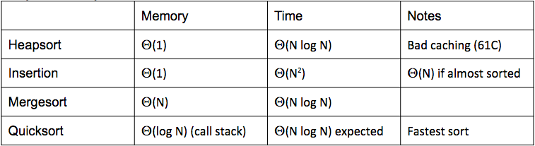

Lecture 33 - 04/11
Sorting II
Quicksort (aka Partition Sort)
- For an input array X, we choose a pivot element arbitrarily at index i
- Now we rearrange the array, such that all elements to the left of X[i] after rearrangement are ≤X[i], and all elements to the right are ≥X[i]
- This thus creates two partitions of the original input - a partition smaller than the pivot and one greater than the pivot
- Relative order of elements within each partition doesn't matter
- We recursively now do this same procedure on each of these two partitions we just made, to create further partitions until the base case of a size one/zero element to pivot/partition on
- Thus, we will eventually have all the elements in the sorted order by doing this 'quicksort' in-place (thus no need for merge sort's walking through smaller elements to combine)
- Runtime: all depends on how good we choose our pivot
- Best case, when pivot is always the middle size element in the array: Ω(NlogN)
- logN recursive layers of quicksort, each of N work
- Worst case, when pivot is always largert/smallest size element: O(N2)
- Emprically quicksort is actually the fastest sort
- This is because even if quicksort chooses a pivot that is always in the smallest tenth of the array with respect to element size, the height of the resulting recursion of quicksort is still logarithmic, only with a higher base
- For the example where pivot is always in smallest/largest tenth of the array, height will be ≈log910, which still gives a runtime of Θ(NlogN)
- Essentially, even with reasonably bad pivot, we still have a nice recursive structure to our sorting algorithm, and that is why quicksort performs so well!
- Empirical statistical analyisis of quicksort runtime for many different arrays shows the probability of a runtime even remotely close to O(N2) is effectively zero, and actual runtime distribution is nicely centered around Θ(NlogN)
- More info on this: http://www.informit.com/articles/article.aspx?p=2017754&seqNum=7#
Improving Quicksort:
- Quicksort runtime for an array that is sorted/almost sorted or has a very high number of duplicate elements is very poor
- Avoid this by picking randomized pivots
- Scrambling the array before starting the sort
- Pick better pivot: randomly choose X elements from the array (for example, let's say three), and take the median of these chosen elements
- Tony Hoare’s In-place Partitioning Scheme (see next lecture)
- Other strategies to calculate/approximate the median and then sort based on this calculated/approximated median
- Calculating actual median of an array can be done in linear time and makes quicksort very safe, but will make quicksort slower than mergesort
- Introspection: if we exceed some maximum recursion depth (for example 10), then switch to a mergesort algorithm
Summary of Sorting Algorithms so far

- Like insertion sort, but we fix multiple inversions at once
- Instead of comparing and swapping items that are adjacent as we insert, compare items that are a stridelength h apart
- Start with a larger stride h, and decrease it to 1 (at this point, we compare adjacent items)
- Let's say we have 1000 items in the sorted partition of our array
- When we add an element to the sorted partition, we can first have a big stride of say 500, and then keep cutting this in half each swap (250,125,...,4,2,1)
- Can generalize the stride h as some value 2k−1 for some number k that decreases to 1